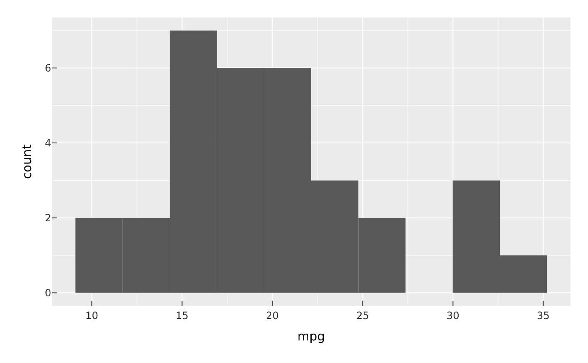
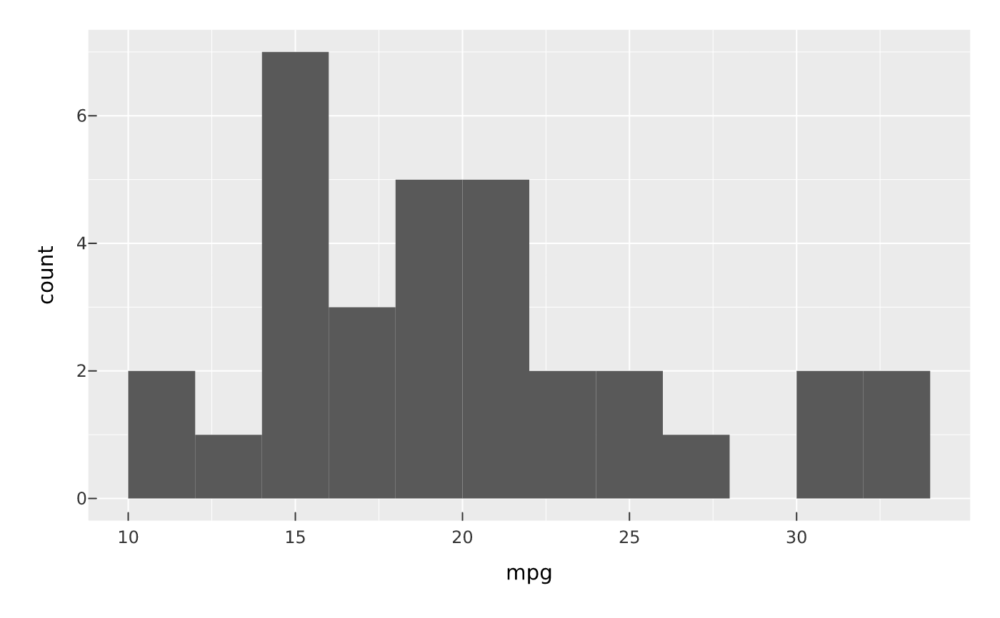
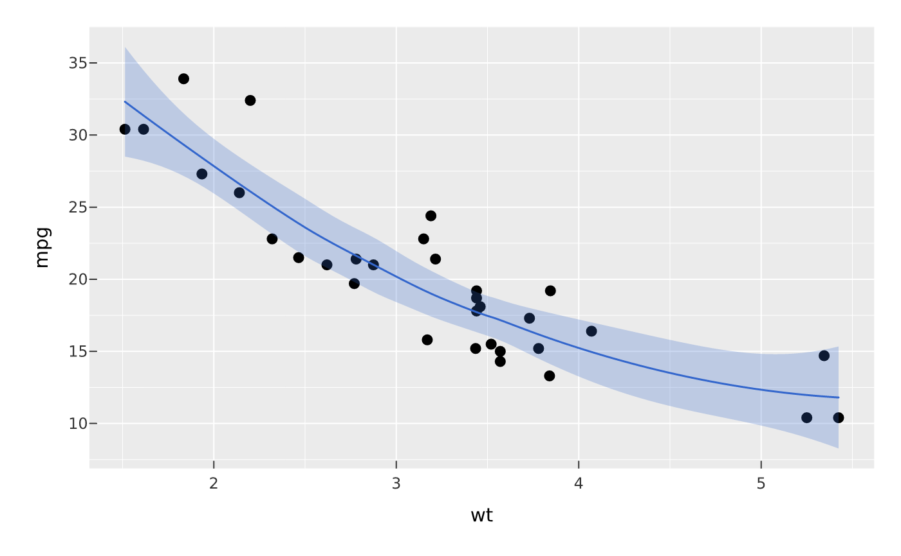
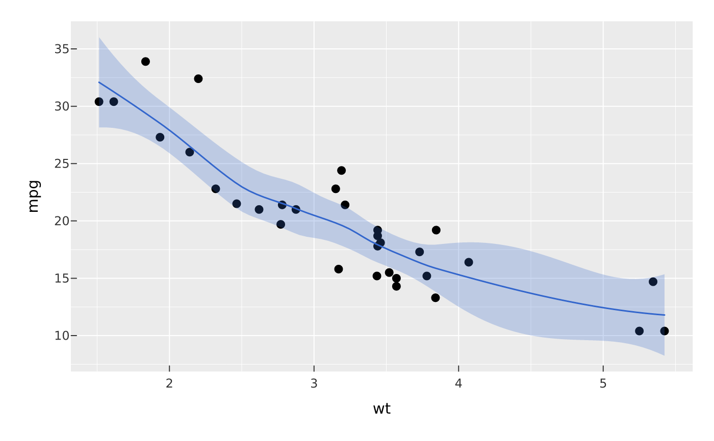

Marks that apply a statistical transform before drawing. mark_histogram()
bins a continuous x and draws the per-bin counts as bars. The bin stat
computes count, density (each group integrates to 1), ncount and
ndensity (scaled to a maximum of 1), and width, for after_stat().
mark_smooth() fits a model of y on x (per group) and draws the fitted
line, with a confidence ribbon when se = TRUE.
Usage
mark_histogram(
plot,
...,
bins = 30,
binwidth = NULL,
breaks = NULL,
boundary = NULL,
center = NULL,
closed = c("right", "left"),
position = "stack",
blend = NULL,
sketch = NULL,
data = NULL
)
mark_freqpoly(
plot,
...,
bins = 30,
binwidth = NULL,
breaks = NULL,
boundary = NULL,
center = NULL,
closed = c("right", "left"),
position = "identity",
blend = NULL,
sketch = NULL,
data = NULL
)
mark_smooth(
plot,
...,
position = "identity",
method = "auto",
formula = NULL,
span = 0.75,
se = TRUE,
level = 0.95,
method.args = list(),
blend = NULL,
sketch = NULL,
data = NULL
)Arguments
- plot
- ...
Encodings (tidy-eval), e.g.
x,y,color/fill.- bins
Number of histogram bins (default 30), used when neither
binwidthnorbreaksis given. As in ggplot2, the outer bins are centred on the smallest and largest values unlessboundaryorcenteris set.- binwidth
Width of each bin, overriding
bins.- breaks
A numeric vector of bin edges, overriding
binsandbinwidth. Bins may have different widths; values outside the edges are not counted.- boundary, center
Where the bins are aligned:
boundaryis a position that falls on an edge between two bins,centerone that falls on a bin's centre (give at most one). Either may lie outside the data. For examplebinwidth = 1, boundary = 0makes bins(0, 1],(1, 2], .... With neither, bins of a givenbinwidthare aligned onbinwidth / 2.- closed
Which side of each bin is closed:
"right"(default,(a, b]) or"left"([a, b)). The outermost edges always count.- position
Position adjustment for the histogram bars (
"stack","dodge","fill").- blend
Optional blend mode for compositing this layer against what is already drawn beneath it (the panel and earlier layers), one of the CSS
mix-blend-modenames, e.g."multiply","screen","darken". The whole layer composites as one isolated group (not per element).- sketch
A
sketch()spec giving this layer a hand-drawn look (wobbly outlines, hachure fills),NA/FALSEto force it crisp (overriding a plot-widetheme_sketch()), orNULL(default) to inherit. Geometry marks accept it; text, raster, hex and datashade marks do not.- data
Optional layer data frame; overrides the plot data for this layer.
- method
Smoothing method: one of
"auto","lm","loess","glm","gam","rq".- formula
Model formula in terms of
xandy(e.g.y ~ poly(x, 2),y ~ s(x)forgam). Defaults toy ~ x(y ~ s(x)forgam).- span
loessneighbourhood size (larger = smoother).- se
Draw a confidence ribbon around the smooth? Ignored for
"rq".- level
Confidence level for the ribbon.
- method.args
Extra arguments to the fitting function, e.g.
list(family = binomial())forglm, orlist(tau = 0.9)forrq.
Value
The modified PlotSpec.
Details
mark_smooth() supports several methods:
"auto"(default) picks"loess"for small groups (< 1000 points) and"gam"for large ones."lm"/"glm"— linear and generalised linear fits (glmtakes afamilyviamethod.args, e.g.binomial()for logistic)."loess"— local regression, controlled byspan."gam"— a generalised additive model with a smooth term (defaulty ~ s(x)); needs the mgcv package."rq"— quantile regression at a singlemethod.args$tau(default the median); needs the quantreg package and draws the fitted line only (no confidence ribbon). For several quantiles, add one layer pertau.
mark_freqpoly() draws the same bin counts as a line through the bin
centres (a frequency polygon), one line per group. Like ggplot2's
geom_freqpoly() it adds an empty bin at each end, so each line starts and
ends at zero. It takes the same binning arguments as mark_histogram(), and
y = after_stat(density) draws densities instead of counts.
Examples
vplot(mtcars) |> mark_histogram(x = mpg, bins = 10)

# bins of width 2 with an edge at 10: (10, 12], (12, 14], ...
vplot(mtcars) |> mark_histogram(x = mpg, binwidth = 2, boundary = 10)

vplot(mtcars) |> mark_freqpoly(x = mpg, color = factor(cyl), binwidth = 2)

vplot(mtcars) |> mark_point(x = wt, y = mpg) |> mark_smooth(x = wt, y = mpg)

# local regression with a wider neighbourhood
vplot(mtcars) |>
mark_point(x = wt, y = mpg) |>
mark_smooth(x = wt, y = mpg, method = "loess", span = 0.9)